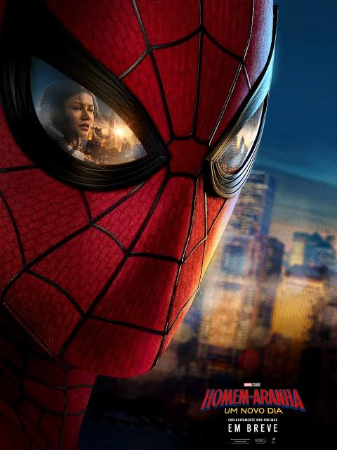

Aventura / Ação
Um Novo Dia
É um NOVO DIA para Peter Parker. Combater o crime em tempo integral como Homem-Aranha em um mundo que não se lembra dele — e a pressão de ver seus antigos amigos seguirem em frente sem ele — desencadeia uma mudança em Peter que ele talvez não consiga controlar.
Sessões: 18/08
15:30
18:45
21:15
Garanta seu ingresso